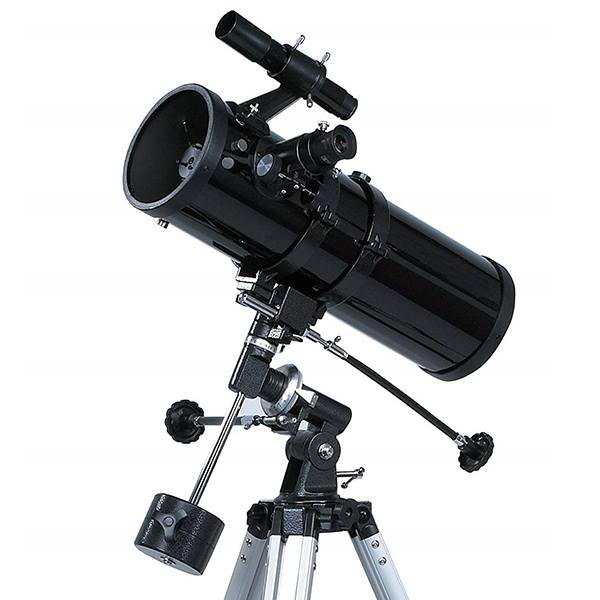

REFLECTOR
กล้องโทรทัศน์ชนิดสะท้อนแสง (reflector) หลักการทำงานของกล้องชนิดนี้ก็คือ เราจะ ใช้กระจกเงาเว้าเพื่อรวมแสงก่อน แล้วมีกระจก เงาเล็กๆ หลายอันช่วยสะท้อนแสงไปยังแผ่น ภาพหรือสะท้อนแสงผ่านที่มองเข้าตาผู้ดูกล้อง ชนิดนี้ที่ใหญ่ที่สุดในโลก มีเส้นผ่านศูนย์กลาง ของกระจกเงาเว้า ยาวถึง 200 นิ้ว (5.1 เมตร) ตั้งอยู่ที่ภูเขาพา โลมาร์แคลิฟอร์เนีย ในอเมริกา ขณะนี้มีกล้องโทร ทัศน์แบบสะท้อนแสง ขนาดใหญ่ที่สุดในโลกขนาด 236 นิ้ว อยู่ที่หอดูดาวดาราศาสตร์ฟิสิกส์ สหภาพโซเวียต รัสเซียกล้องโทรทัศน์ชนิดใช้แสงขนาดใหญ่มัก ใช้เพื่อถ่ายรูปวัตถุบนท้อง ฟ้าที่อยู่ไกลเพียง 6-7 พันล้านปีแสง เฉพาะในเวลากลางคืนที่ท้องฟ้า ปลอดโปร่ง